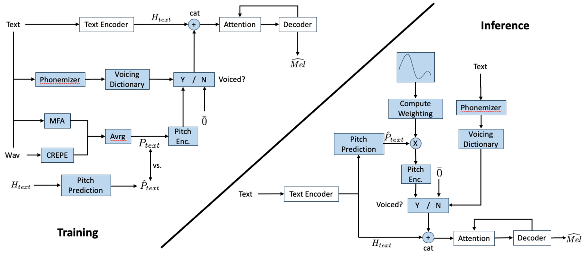

Localized Pitch Control for Encoder-Decoder Text-to-Speech Architectures
Abstract. We present a method for local phoneme-based pitch control in text-to-speech (TTS) systems, adaptable to any encoder-decoder architecture. The approach integrates a pitch prediction module, which predicts an appropriate natural-sounding pitch contour for the voiced phonemes in the target phrase, and a pitch encoding module that quantizes the pitch values and via a codebook provides associated pitch embeddings that are sent to the decoder to exert pitch control. A graphical user interface allows users to adjust the predicted pitch contours, providing fine control over the speech output and enabling considerable prododic nuance. The result is a high degree of phoneme-level pitch control, demonstrated using the Tacotron 2 framework, with a pitch predictor mean squared error (MSE) of 19.08 Hz vs ground truth and a correlation coefficient of 0.91 for target vs. actual pitch in rendering the desired phoneme-level pitches. Audio demos in the accompanying website demonstrate both the usefulness and naturalness of pitch-controlled synthesized speech that our system facilitates.
Contents
System Overview

Figure 1. Pitch Control Architecture (blue boxes: added pitch control components)
Pitch Control Examples
| Emotion | Text | Pitch Curve | Original | Modified |
|---|---|---|---|---|
| Neutral | I’m eating a very delicious and bright red apple. |  |
||
| Happy | The king is marching to the field and to glory. |  |
||
| Neutral | Her pet dog has an amazingly friendly personality. |  |
||
| Happy | That’s the best news I’ve heard in a long time. |  |